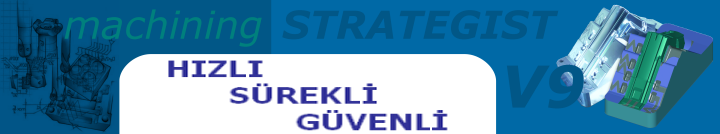
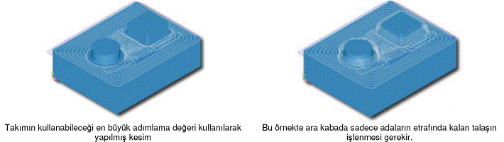

|
Üçgenselleþtirmelerdeki Geliþmeler:
Machining STRATEGIST içindeki üçgenselleþtirme yöntemi daha az üçgen içerecek þekilde yeniden düzenlenmiþtir. Bu sayede dosya boyutlarý küçülmekte, hafýza kullanýmý azalmakta ve iþleme sürelerini düþürmektedir. Ayrýca grafik uygulamalarýnýn üzerindeki yük de bu sayede oldukça azalmaktadýr.

Hesaplama Sürelerindeki Geliþmeler:
Tüm iþleme yöntemlerindeki, hesaplama süreleri bariz bir þekilde azalmýþtýr. Karsýlaþtýrma testlerinde bu azalmanýn 50% kadar düþtüðü gözlemlenmiþtir. Ayrýca paso baðlama iþlemleri de hýzlanmýþtýr. Ara kaba ve yatay alan iþlemlerinin baðlama sürelerindeki artýþ 10 kata dek çýkmýþtýr.
Takým Yolu Karþýlaþtýrmasý (Paralel Takým Yolu 4 Küre) |
Tolerans |
V 7.0 |
V 8.0 |
V 9.0 |
Azalma |
0.02 |
100826 |
74405 |
68067 |
34% |
0.01 |
110223 |
60720 |
48910 |
48% |
Nokta Azaltmalar:
Tüm iþleme yöntemlerinde artýk nokta azaltma ve yay uyarlama seçeneði bulunmaktadýr. Yaya uydurma iþlemini basitçe üç noktadan, belirlenen tolerans deðerleri içinde yay geçebiliyorsa, yay kodu basma olarak açýklayabiliriz. Yay uyarlama iþlemi özgün olarak tüm yöntemlerde siz aksini belirtmedikçe açýktýr. Karþýlaþtýrmalarda kod dosyalarý boyutlarýnýn %50 kadar azaldýðý görülmüþtür. Nokta azaltma iþlemi ise dosya boyutunda ciddi azalma saðlamýþtýr.
Hesaplama Süreleri Karþýlaþtýrmalarý |
Yöntem |
Takým |
Talaþ |
Tolerans |
Adýmlama |
V7.0 |
V8.0 |
V9.0 |
Azalma |
Kaba Boþaltma |
6x1 |
0.1 |
0.05 |
0.1 |
90 |
56 |
35 |
37.78% |
Eþ Yükseltili |
6x1 |
0 |
0.01 |
0.04 |
361 |
292 |
213 |
19.11% |
Eþ Yükseltili |
4x2 |
0 |
0.01 |
0.04 |
282 |
197 |
176 |
30.14% |
Eþ Yükseltili |
2x1 |
0 |
0.01 |
0.04 |
476 |
392 |
298 |
17.65% |
Eþ Yükseltili |
2x1 |
0.05 |
0.01 |
0.04 |
492 |
391 |
290 |
20.53% |
Eþ Yükseltili |
2x0 |
0 |
0.01 |
0.04 |
452 |
376 |
289 |
16.81% |
Paralel |
2x1 |
0 |
0.01 |
0.04 |
297 |
176 |
124 |
40.74% |
Paralel |
2x1 |
0.05 |
0.01 |
0.01 |
1218 |
746 |
578 |
38.75% |
Dip-Köþe |
2x1 |
0 |
0.01 |
Yok |
62 |
40 |
32 |
35.48% |
Dip-Köþe |
2x1 |
0.05 |
0.01 |
Yok |
54 |
34 |
27 |
37.04% |
Dip-Köþe |
2x0 |
0 |
0.01 |
Yok |
89 |
57 |
35 |
35.96% |
Dip-Köþe |
2x0 |
0.05 |
0.01 |
Yok |
84 |
53 |
32 |
36.90% |
Sabit Adýmlý |
6x3 |
0 |
0.01 |
0.2 |
783 |
510 |
430 |
34.87% |
Sabit Adýmlý |
2x1 |
0 |
0.01 |
0.2 |
1456 |
968 |
564 |
33.52% |
Yüzey kalitesi:
Temas noktalarý arasýndaki deðiþimin çok dar olduðu bölgelerdeki iþlemlerdeki yüzey kalitesi büyük miktarda arttýrýlmýþtýr. Öyle ki bu gibi bölgelerde ek dip-köþe temizlemeye gerek kalmamaktadýr. Düz, küre veya ucu kavisli takýmlarla gerçekleþtirilen kaba boþaltma, yatay alan, paralel kaba ve eþ yükseltili iþlemelerde hesaplama hýzý ve iþlem kalitesi büyük ölçüde yükseltilmiþtir.
Helisel Kaba:
Machining Strategist sürüm 9.0 yeni ve eþsiz bir kaba boþaltma yöntemi barýndýrmaktadýr. Hatlarýn ofsetlenmesi ile oluþturulan geleneksel kaba talaþ kaldýrma yöntemlerinde her aþaðý adýmlama deðerleri takýma binen yükler göz önüne alýnarak kýsýtlanmak zorundadýr. Bu yüzden, kesme yükleri takým tutucudan en uzak noktada ve takýmýn neredeyse en ucuna binmekte ve aþýnmanýn en çok bu noktalarda gerçekleþmektedir. Yeni helisel kaba yönteminde parçanýn içinde gelgitli helisel hareketler gerçekleþtirilerek takýmýn tam çapta kesimini azaltýlmaktadýr. Bu eþsiz kesme yöntemi, uygun ilerleme hýzlarýný da koruyarak takýmýn kullanabileceði en büyük adýmlama deðerini iþleme parçasý üzerinde uygulamanýzý saðlar. Kesme kuvvetleri takýmýn nerdeyse ortasýna geleceðinden olasý titreþimler ve sapmalar azalýr ve takým aþýnmasý kesme yüzeyleri boyunca eþit daðýlýr. Helisel kaba yönteminde çevrim, verimli ve güvenli iþleme, kesim þartlarýný en uygun hale getirme ve yüksek hýzlarda kesim yapýlabilmesini saðlamak için takým yolunu otomatikman ayarlar. Bu yöntem kaba iþleme esnasýnda her seviyede talaþ bulunan bölgeye, takýmýn her zaman talaþa yandan girmesini saðlar. Takým yolu gerekirse, helisel hareketler ile diþi olarak adlandýrabileceðimiz bölgelerde de iþlem gerçekleþtirebilir.

Yöntem |
Geleneksel Ofsetleme |
Helisel Hareket |
Aþaðý adýmlama sayýsý |
10 Tam boþaltma pasosu |
2 Tam Paso + 8 Ara iþlem |
Kesme mesafesi |
21,024 |
8,177 |
Toplam kesim |
22,369 |
13,736 |
Ýlerleme |
8000 mm/dak |
8000 mm/dak |
Helisel kaba takým yolu pasolarýn önceden oluþturulmasý ve baðlanmasý gerekmeksizin doðrudan takým yolu oluþturur. Konik saplý takýmlar tanýmlamalara eklenmiþtir. Helisel kaba takým yolunda ister takým yolunun baþlangýcýnda ister bitiminde bir yuva noktasý atanabilmektedir.
|